database Seeder
Intro
- kalo menambahkan data itu menggunakan sebuah fitur yang bernama tinker
- kalo cuma 1, 2, 5 ok, tapi bagaimana jika isi 20 post
- akan merepotkan kalo kita tulis manual pakai tinker
- atau ketika kita masih dalam pengembangan / development itu masih sering mengubah2 skema dari table, menambah field baru, menghapus field yang sudah ada didalam database, menambahkan relasi, itu pasti table nya masih diubah2
- di materi ini kita akan lihat mengubah table user kita dan juga table post, karena kita sekarang akan melakukan relasi dari 2 table itu , setiap kita mengubah skema tablenya itu artinya kita harus melakukan kembali migrasi, yang artinya database kita akan kosong lagi, mulai lagi dari awal
- kalo kita mau menambahkan data lagi kita buka tinker lagi, isikan lagi datanya manual 1 per 1
- ini akan mempermudah kita untuk mempopulasi / mengisikan data secara otomatis ketika kita nanti melakukan migrasi
- jadi pas migrasi otomatis data ditable nya sudah ada isinya, tidak perlu repot2 lagi buka tinker, isikan manual
menambahkan fitur
- menambahkan deskripsi dari tiap2 postinganya, jadi nanti postingannya ditulis oleh siapa, dan masuk dalam categori apa
- buka view posts.blade.php
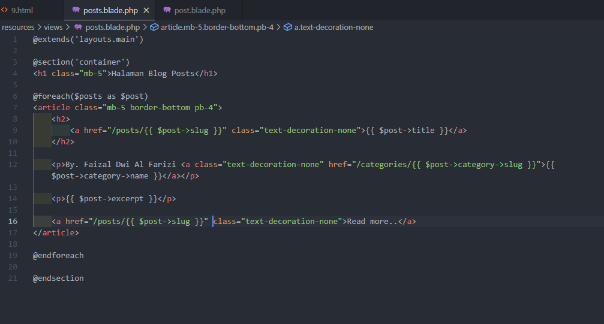
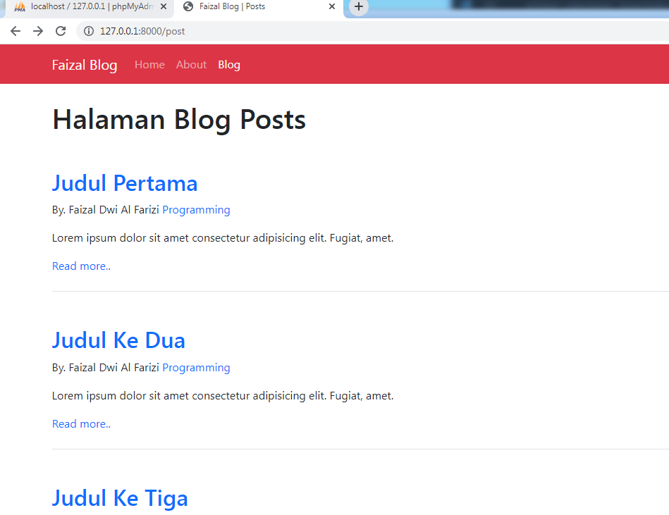
membuat si penulisnya bisa kita click
- buka file migration create_postsnya
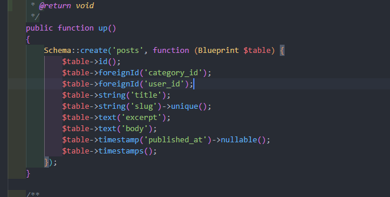
- solusi migration fresh : seeder
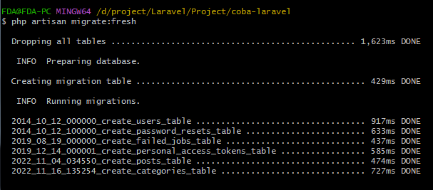
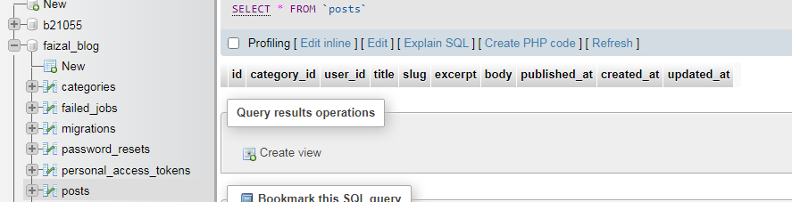
- tapi datanya jadi kosong
Seeding
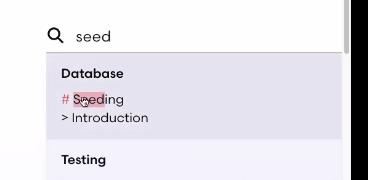
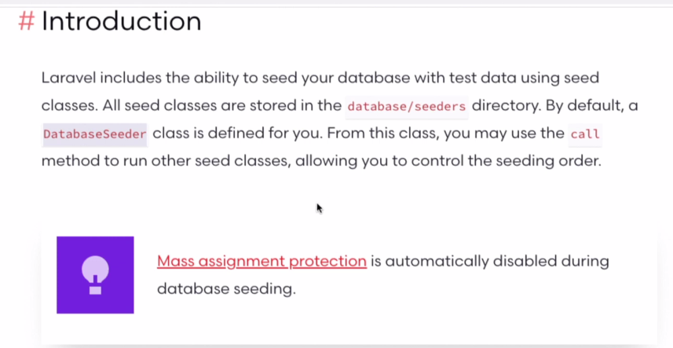
- seed : benih
- kita bisa mengisi otomatis table kita ketika kita buat
- panen isi tablenya
- didalam laravel memiliki kemampuan untuk melakukan seed didatabase kita dengan data test, dengan menggunakan class seed
- jadi tiap model itu kita bisa bikin class seed nya, dan nanti disimpan kedalam folder seeders
- secara default kita sudah dikasih sebuah seeder yang namanya DatabaseSeeder yang nanti bisa kita gunakan untuk menjalankan proses seedingnya dari class2 / model2 lain
- seeder adalah fitur yang dikasih laravel untuk menggenerate / mempopulasi isi dari table kita secara otomatis dengan data testing / data dami pada saat development
Membuat Seeders
- cukup ketikan perintah
php artisan make:seeder (nama seedernya)
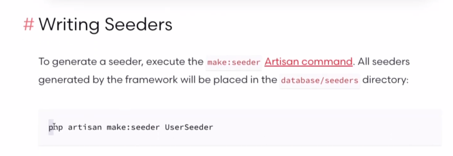
- buka folder database\seeders\DatabaseSeeder.php
- ini yang general : kita bisa menjalankan seeder untuk table manapun
- coba kit nyalakan dulu
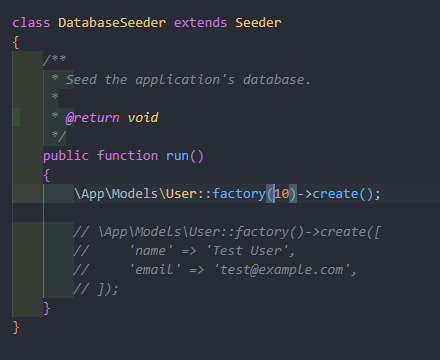
- coba kita jalankan :
php artisan db:seed
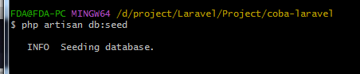
- Hasil :
- tiba2 ada 10 data random
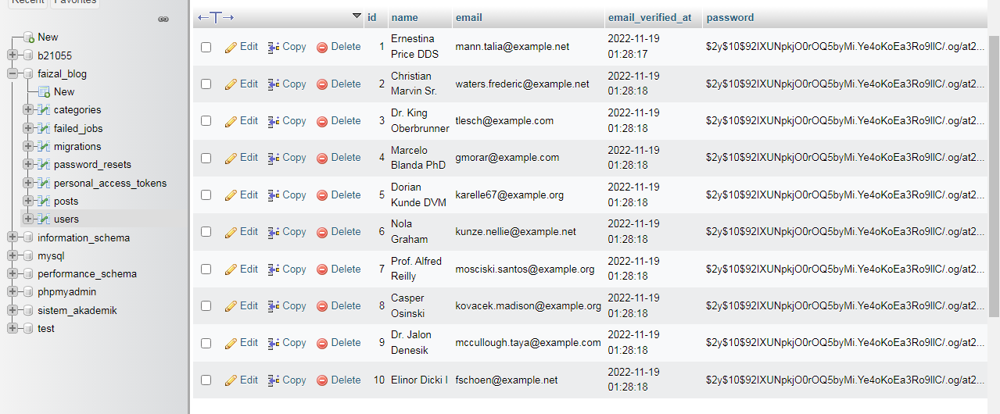
- ini kita melakukan seeding dengan bantuan factory
- ada sebuah fitur yang dimana dia menggenerate 10 data palsu untuk dimasukan ke dalam table kita
- kita coba manual dulu, kita hilangin data nya
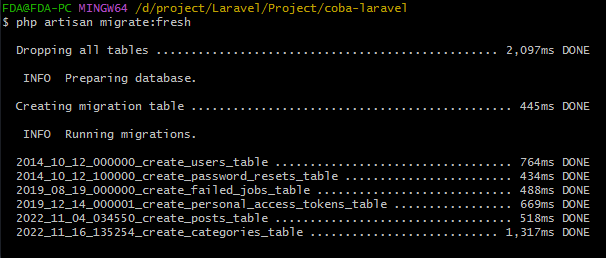
kita lakukan yang didalam tinker ke dalam seeder
- buka file seeder/DatabaseSeeder.php
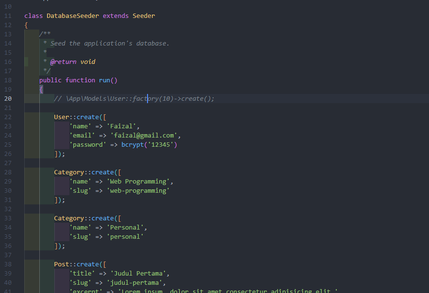
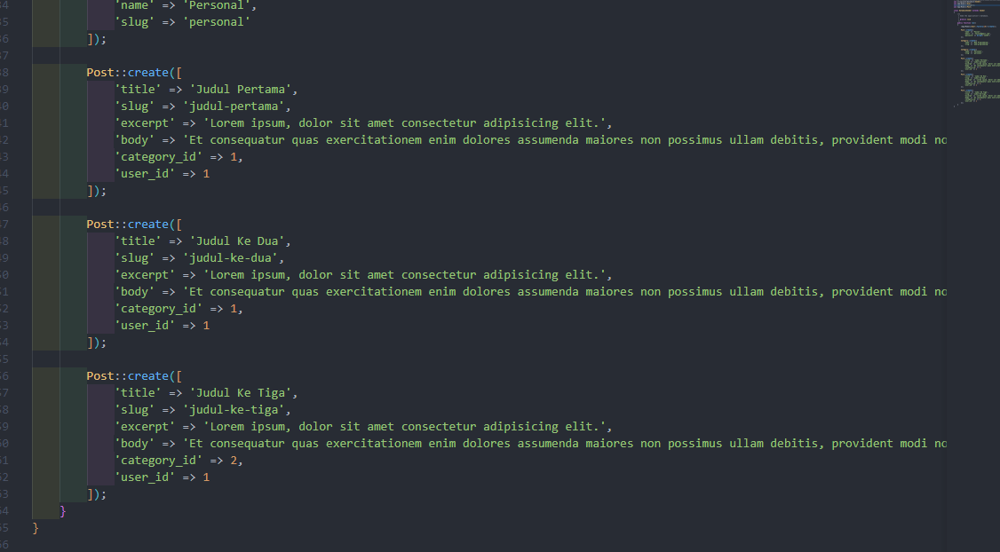
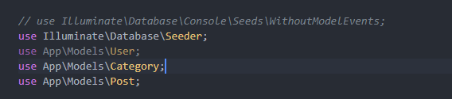
- kita ketikkan di command :
php artisan db:seed
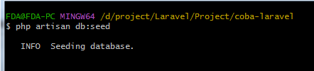
- kita cek di database
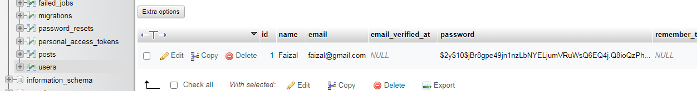
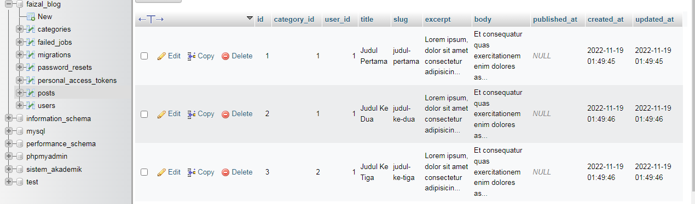
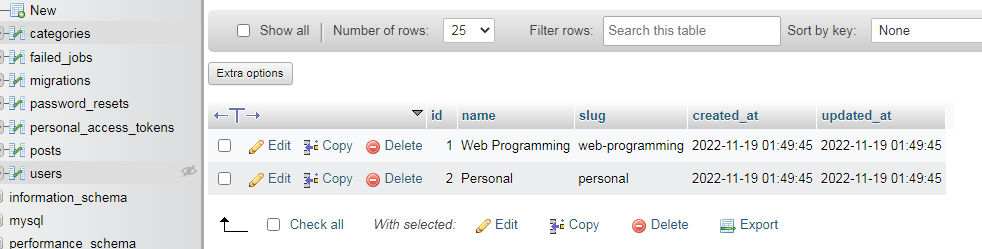
kita bisa migrate fresh sekalian seed
- tambahkan data 4
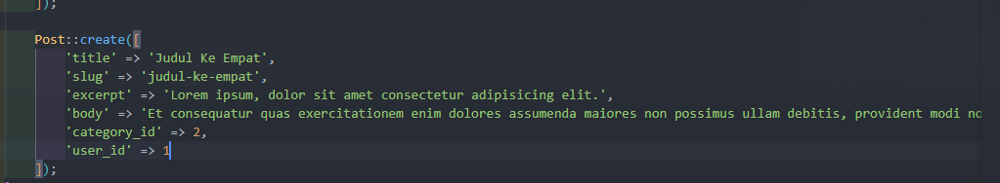
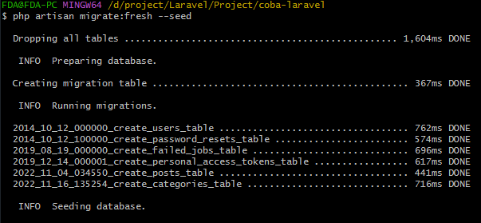
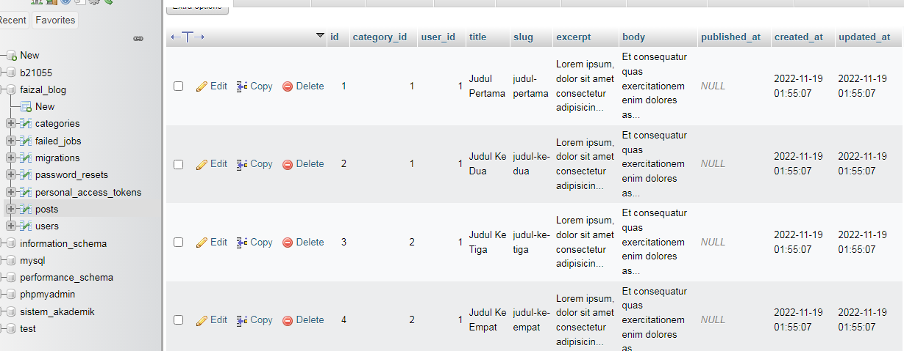
kita atur authornya
- buka file model Post.php
- tambahkan method untuk menghubungkan table post dengan user
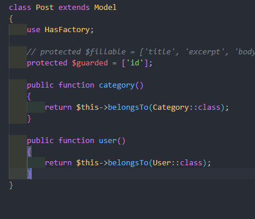
- buka file model User.php
- tambahkan method
- untuk menghubungkan 1 user boleh punya banyak post
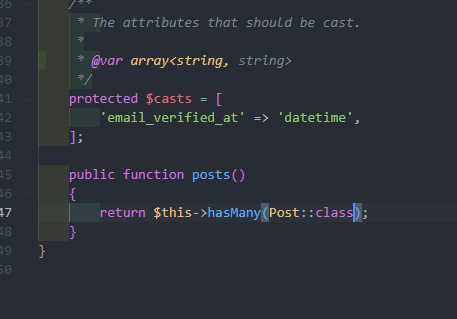
- buka file view posts.blade.php
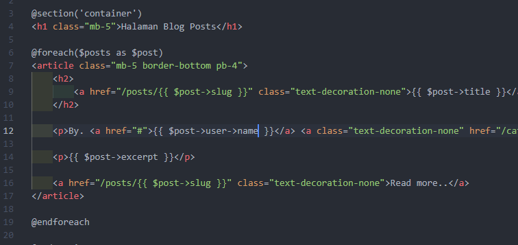
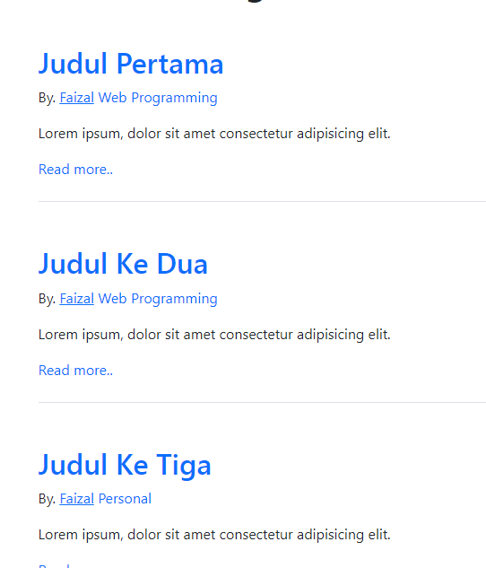
- kita bikin user baru
- buka file seeder DatabaseSeeder.php
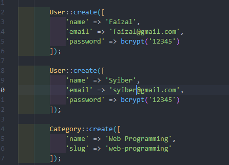
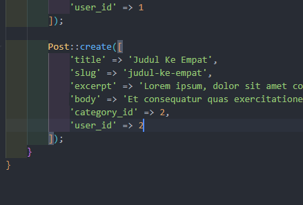
- kita migrate fresh seed
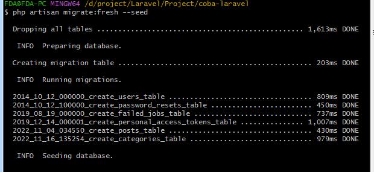
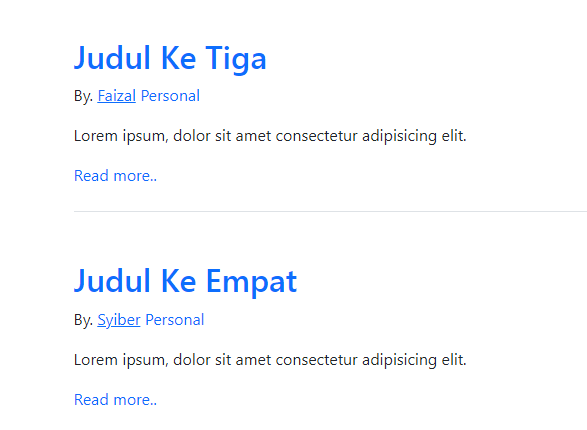
- atur juga yang single post view post.blade.php
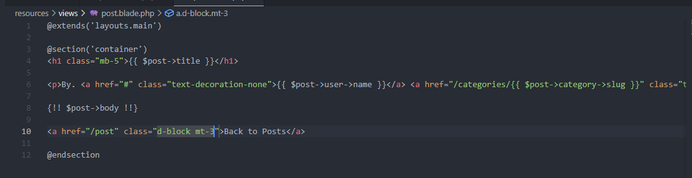
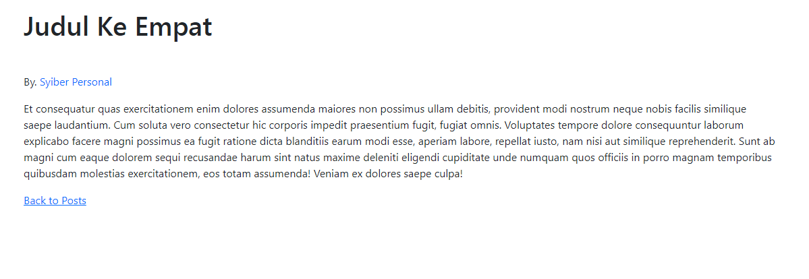